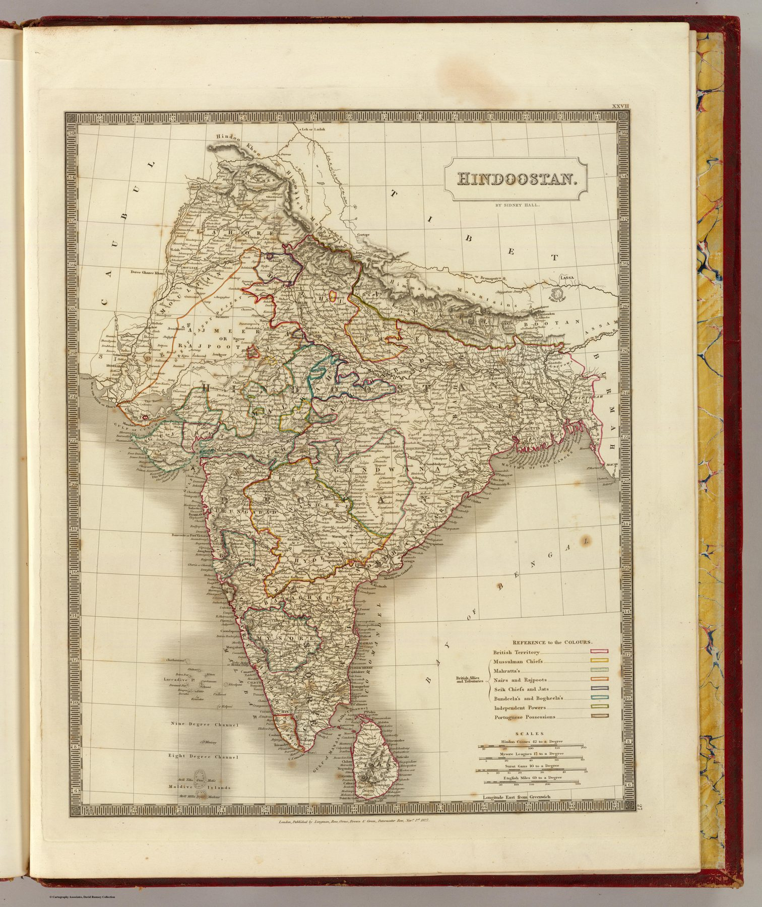

A plate issued before its title page
Hall’s map bears the date 1 November 1827, while the first edition of the atlas is dated 1830. The maps were produced and apparently issued in parts before the completed volumes received their title page. Outline colour and hachured relief give the sheet the clarity and restraint associated with early nineteenth-century British commercial engraving.
Survey assumed rather than displayed
Unlike Rennell’s maps, Hall’s plate does not foreground the process of measurement. It inherits a cartographic framework already transformed by decades of route surveys and compilation. The labour of survey has receded into the apparently self-evident accuracy of the atlas.
A divided political landscape
In 1827 the subcontinent remained a complex field of Company territories, princely states and neighbouring powers. What is settled is the cartographic confidence with which that political variety is bounded and named.
On the sheet
The legend sorts the map by people as much as by state. ‘Reference to the Colours’ gives British Territory; then, bracketed as ‘British Allies and Tributaries’, Mussulman Chiefs, Mahratta’s, Nairs and Rajpoots, Seik Chiefs and Jats, Bundeela’s and Bogheela’s; then Independent Powers and Portuguese Possessions. Below it the Scales are four: Hindoo Cosses 42 to a Degree, Mysore Leagues 17 to a Degree, Surat Gaus 10 to a Degree, English Miles 69 to a Degree – the Indian measures still printed on a London atlas plate in 1827. Longitude is east from Greenwich; the imprint reads Longman, Rees, Orme, Brown & Green, Paternoster Row, Novr 1st 1827; the plate is numbered XXVII. The colour is outline only, a thin wash along each frontier.
The gaze
Hall’s plate is quiet about its sources, and the quiet is what separates it from Rennell. A purchaser of the New General Atlas received the subcontinent with its boundaries drawn and its relief hachured, and had no reason to ask who had walked the routes. By 1827 a commercial engraver could treat post-survey India as settled stock, issued in parts and bound up when the title page was ready.